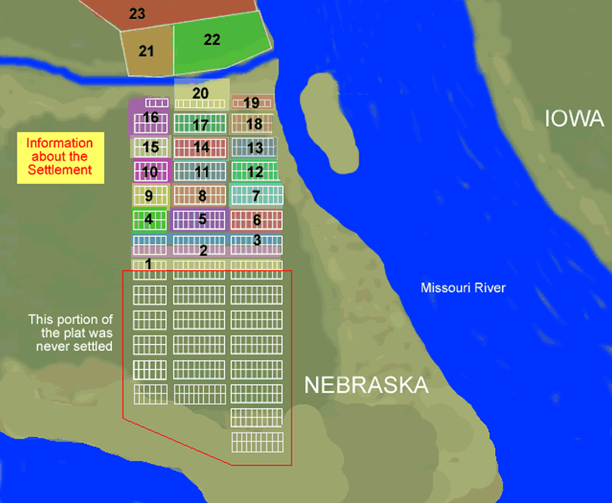
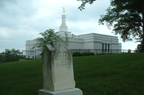

Winter Quarters Map
Winter Quarters
(now Florence, Nebraska)

Located in present-day Florence, Nebraska, Winter Quarters was one of the main settlements established by Latter-day Saints after their exodus from Nauvoo in 1846. The Winter Quarters settlement was divided into 23 wards. The Winter Quarters wards were only in place from 1846-1848, at which time the government required the Latter-day Saints, who were on Indian lands, to move back to the east side of the Missouri River.
Today the Winter Quarters Pioneer Cemetery is located next to the Winter Quarters Temple of The Church of Jesus Christ of Latter-day Saints.
View Residents and Map of Ward Divisions